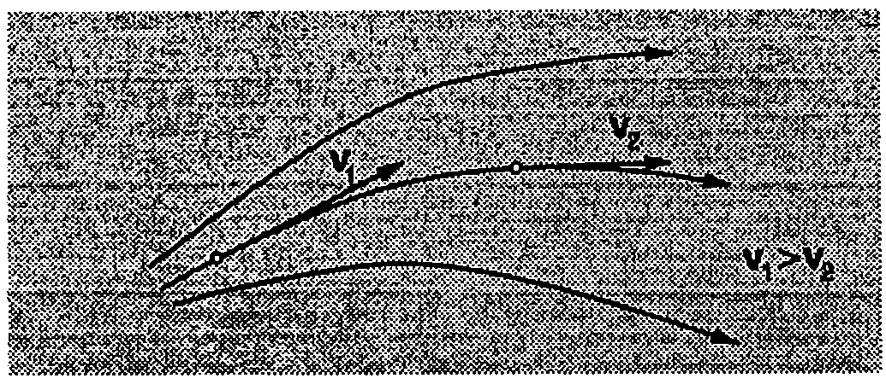
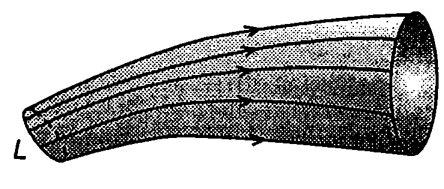
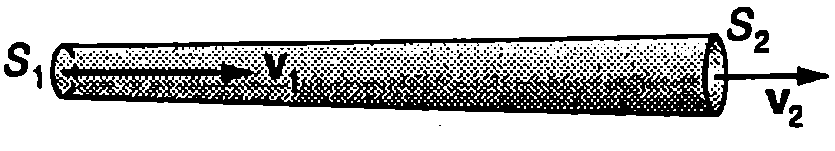
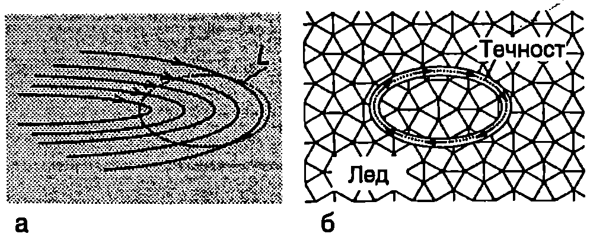
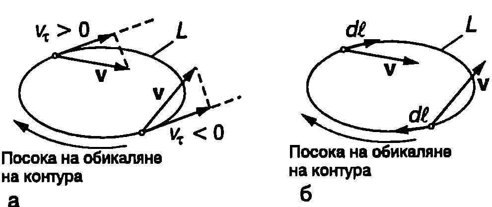
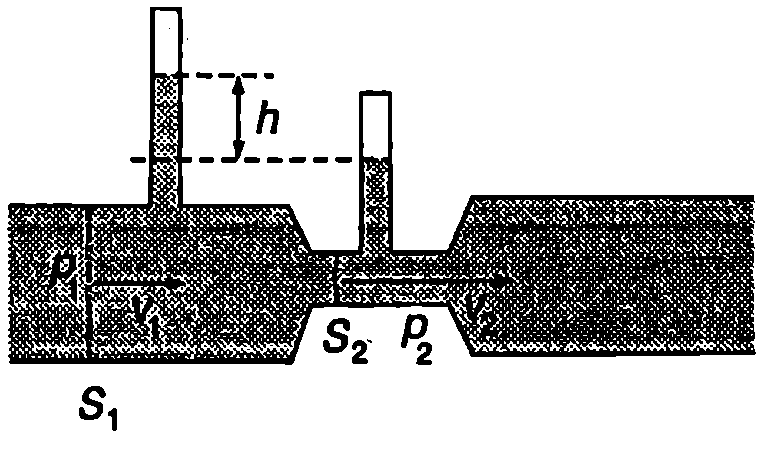
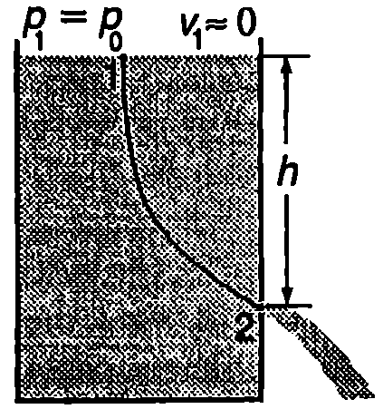
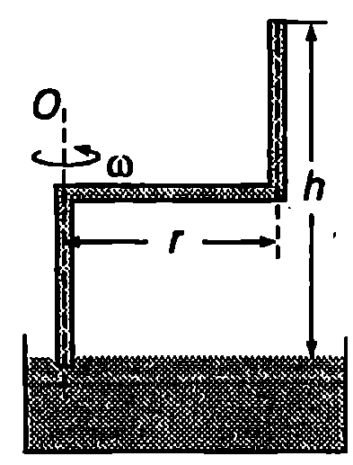

Явленията, свързани с вискозитета, свиваемостта и топлопроводността на реалните течности и газове усложняват извън редно много изследването на тяхното движение. Редица общи закономерности обаче могат да се получат, като се използва опростен модел на абсолютно несвиваем и невискозен флуид, наречен идеален флуид. При описване движението на идеалните флуиди също така не се отчита изменението на температурата и топлообмена между отделните им слоеве.
Стационарно течение
Да направим “моментна снимка” на движещ се флуид. Всяка точка от пространството, заето от флуида, ще характеризираме със скоростта на частицата, която в дадения момент преминава през нея. (Частици на флуида се наричат много малки от макроскопична гледна точка обеми от течността или газа, които обаче съдържат огромен брой молекули.) Съвкупността от всички вектори се нарича поле на вектора на скоростта. Линия, във всяка точка на която векторът на скоростта е насочен по допирателната, се нарича токова линия. Токовите линии се чертаят така, че гъстотата им да характеризира големината на скоростта. В областите с по-голяма скорост токовите линии се сгъстяват (Фиг. \ref{fig:25.1}). Когато полето на скоростта не се изменя с течение на времето, движението на флуида се нарича стационарно. В противен случай то е нестационарно. При стационарно течение всички частици, преминават през определена (произволно взета) точка от пространството с една и съща скорост, т.е. скоростта, характеризираща тази точка, не се изменя с времето. Картината на токовите линии също остава неизменна. Само при стационарно течение токовите линии съвпадат с траекториите на частиците. По-нататък ще разглеждаме стационарни течения.
\begin{figure}[h!] \centering  \caption{Токови линии. Скоростта на частиците е насочена по допирателната към токовите линии. В областите с по-голяма скорост токовите линии се сгъстяват.} \label{fig:25.1} \end{figure}
\begin{figure}[h!] \centering  \caption{Токова тръба.} \label{fig:25.2} \end{figure}
Да вземем произволен затворен контур и през всяка негова точка да прекараме съответната токова линия: токовите линии образуват повърхност, наречена токова тръба (Фиг. \ref{fig:25.2}). Тъй като скоростите на частиците са насочени по допирателната към токовата тръба, те не я пресичат и в токова тръба течността тече така, както би текла в гладка твърда тръба със същата форма.
Уравнение за непрекъснатост
На Фиг. \ref{fig:25.3} е показана много тясна токова тръба. и са две произволно взети нейни напречни сечения. Тъй като площите и са малки, можем да смятаме, че във всяка точка от скоростта на флуида е постоянна и има големина , а във всички точки от флуидът се движи със скорост (Фиг. \ref{fig:25.3}). За време през сечението се втича флуид с маса , а през изтича флуид с маса , където е плътността на несвиваемия флуид. От закона за запазване на масата следва, че , т.е
\begin{figure}[h!] \centering  \caption{} \label{fig:25.3} \end{figure}
Полученият резултат е в сила за две произволно избрани напречни сечения на една токова тръба. Следователно произведението от скоростта на частиците в дадено напречно сечение на токова тръба и площта на това сечение остава постоянно по цялата дължина на тръбата
Уравнение \eqref{eq:25.2} се нарича уравнение за непрекъснатост на струята. От него следва, че на местата, където токовата тръба се стеснява, скоростта на струята нараства, а в широките части на тръбата флуидът се движи с по-малка скорост.
Пример 25.1
По аортата, чийто радиус е около 1 cm, кръвта се движи със скорост около 30 cm/s. Колко е скоростта на кръвта в капилярите, ако сумата от площите на напречните сечения на всички капиляри е около 0,2 m? \end{psexample}
Решение
Масата на кръвта, преминала за определен интервал от време през напречното сечение на аортата, е равна на сумата от масите на кръвта, преминала през всички капиляри за същото време. От уравнението за непрекъснатост определяме скоростта на кръвта в капилярите
Безвихрово и вихрово течение
Всяко циклично движение на течност по затворени тръби и канали е прието да се нарича циркулация: кръвта циркулира в кръвоносните съдове на човека и животните, водата циркулира по тръбите на системата за парно отопление на сградите и т.н. Във физиката понятието циркулация има по-общ смисъл и е една от важните характеристики на всяко векторно поле, включително на електричните и магнитните полета. Ще дефинираме циркулацията за векторното поле на скоростта при движение на идеален флуид, тъй като в този случай тя има нагледна физична интерпретация.
\begin{figure}[h!] \centering  \caption{} \label{fig:25.4} \end{figure}
На Фиг. \ref{fig:25.4}а са показани токови линии на движещ се флуид. Нека мислено прекараме произволен затворен контур във флуида и тясна тръба с постоянно сечение , по оста на която преминава контурът. Да предположим, че можем внезапно да замразим цялата течност извън въображаемата тръба. Ако течността, ограничена от ледените стени, започне да тече вътре в тръбата по посока на часовата стрелка или в обратната посока, тогава циркулацията по тръбата (по контура ) е различна от нула (Фиг. \ref{fig:25.4}б). Ако движението на течността в тръбата се преустанови, тогава циркулацията е нула. Дали ще се движи (циркулира) течността вътре в тръбата, зависи от посоката на скоростта в различните точки от контура . Да изберем посока на обикаляне на контура (например посоката на движение на часовата стрелка). Скоростта във всяка точка от контура може да се разложи на тангенциална компонента и нормална компонента. Ако тангенциалната компонента в насочена по посоката на обикаляне на контура, нейната стойност се приема за положителна, а когато е насочена в противоположната посока стойността й е отрицателна (Фиг. \ref{fig:25.5}а). Да отделим елемент от тръбата с безкрайно малка дължи на . Тангенциалната компонента на импулса на течността в него е . За цялата течност в тръбата:
\begin{figure}[h!] \centering  \caption{} \label{fig:25.5} \end{figure}
където интегрирането се извършва по затворения контур . При течността ще продължи да се движи в тръбата по инерция по посока на часовата стрелка, а при — в противоположната посока. Ако обаче , движението на флуида ще се прекрати. Коя от тези три възможности ще се реализира в даден конкретен случай, зависи от стойността на интеграла
който се нарича циркулация на вектора на скоростта по затворения контур . Ако въведем елементарен вектор с модул, равен на дължината на елемента и насочен в избраната посока на обикаляне на контура (Фиг. \ref{fig:25.5}б), уравнение \eqref{eq:25.3} може да се запише във вида
Когато циркулацията на полето на скоростта, пресметната по произволен затворен контур, е равна на нула, движението на флуида се нарича безвихрово. Вихрово е движение, за което циркулацията е различна от нула. Частен случай на вихрово движение е течение, чиито токови линии са затворени криви (например водовъртеж). Тогава, ако в качеството на затворен контур изберем една от токовите линии, циркулацията по нея е различна от нула, защото по определение във всяка точка от токовата линия скоростта е насочена по допирателната: частиците на флуида се движат по токовата линия по посока на движението на часовата стрелка или в противоположната посока.
Закон на Бернули
Да отделим от стационарния поток на идеален флуид тясна токова тръба. За време обемът флуид, затворен между две произволно взети напречни сечения и на токовата тръба, ще се придвижи по посока на токовите линии, при което сечение се премества на разстояние а сечение - на разстояние (Фиг. \ref{fig:25.6}). Тъй като флуидът е несвиваем, двата сиви обема от Фиг. \ref{fig:25.6} са равни: . Върху разглеждания обем от флуида действат силата на тежестта и повърхнинните сили на натиск. Силите на натиск върху околната повърхност на токовата тръба са перпендикулярни на скоростта на флуида в тръбата и не извършват работа. Общата работа на силите на натиск, действащи върху двете напречни сечения, е (Фиг. \ref{fig:25.6})
Ще определим изменението на механичната енергия на разглеждания обем от флуида. Тъй като течението е стационарно, флуидът, които се намира в незатъмнената част на токовата тръба (Фиг. \ref{fig:25.6}) в момента , има същата кинетична и потенциална енергия, както флуида, който е запълвал тази част от тръбата в началния момент . Затова изменението на механичната енергия на целия разглеждан обем от флуида се определя единствено от разликата в механичната енергия (кинетична + потенциална) на двата затъмнени обема. Тъй като обемите и са безкрайно малки, можем да смятаме, че всички частици от флуида в тях се движат с еднакви скорости съответно равни на и и се намират на еднакви височини и . Тогава
Изменението на механичната енергия на флуида е равно на работата на външните сили на натиск. Приравняваме десните страни на уравнения \eqref{eq:25.5} и (25.6.), съкращаваме на и получаваме
\begin{figure}[h!]
\centering
 \caption{}
\label{fig:25.6}
\end{figure}
\caption{}
\label{fig:25.6}
\end{figure}
където е гравитационната потенциална енергия на единица обем от флуида (), а е кинетичната енергия на единица обем от флуида. От уравнение \eqref{eq:25.5} следва, че налягането е равно на работата, която извършват силите на натиск, отнесена към единица обем от флуида: , т.е. и трите едночлена в уравнение \eqref{eq:25.7} могат да се разглеждат като вид енергия (или работа), отнесена към единица обем от флуида. Самото уравнение е следствие от закона за запазване на енергията.
Когато напречното сечение на токовата тръба не е безкрайно малко, величините , и са различни за различните точки от напречното сечение, поради което равенство \eqref{eq:25.7} е само приблизително вярно. То става точно, когато напречното сечение на токовата тръба клони към нула, т.е когато тръбата се стяга около една токова линия. Следователно величините от двете страни на равенство \eqref{eq:25.7} трябва да се отнесат към две точки от една токова линия. Тъй като тези точки са избрани произволно, следва изводът, че за всяка точка от една токова линия величината има една и съща стойност
Това уравнение е получено през 1738 година от швейцарския математик и физик Даниел Бернули (1700-1782). То изразява закона на Бернули за стационарно течение на идеален флуид, който гласи:
**Сумата от налягането , кинетичната енергия на единица обем \displaystyle \frac{\rho v^2**{2} и гравитационната потенциална енергия на единица обем на идеален флуид има една и съща стойност за всички точки на една токова линия.}
Константата в уравнение \eqref{eq:25.8} се нарича константа на Бернули. Доказва се, че при безвихрово течение константата на Бернули има една и съща стойност във всички точки на флуида. Когато течението е вихрово, има еднаква стойност за всички точки от една токова линия, но различните токови линии се характеризират с различни константи на Бернули.
За хоризонтална токова линия () уравнение \eqref{eq:25.7} добива вида
Ако , от уравнение \eqref{eq:25.9} следва, че , т.е. там, където скоростта е по-голяма, налягането е по-малко и обратно. Това следствие от закона на Бернули обяснява редица явления и намира широко практическо приложение.
Пример 25.2
Някои животни правят леговищата си под земята. Обикновено леговището има поне два изхода. С помощта на закона на Бернули обяснете как се проветрява бърлогата? Къде е най-добре да бъдат двата изхода? \end{psexample}
Решение
Когато въздухът над двете дупки се движи с различна скорост, съгласно със закона на Бернули възниква разлика в налягането. Започва движение на въздуха в бърлогата към изхода с по-ниско налягане (към изхода, над който вятърът в по-силен). От другата дупка влиза свеж въздух и бърлогата се проветрява. Подходяща разлика в налягането се създава, когато едната дупка е на завет, а другата — на открито или по-високо място, където обикновено вятърът е по-силен.
Някои приложения на закона на Бернули
\begin{figure}[h!] \centering  \caption{} \label{fig:25.7} \end{figure}
Редица прибори за измерване потока на течности в тръби и тяхната скорост използват закона на Бернули. Чертежът от Фиг. \ref{fig:25.7} илюстрира метод за измерване разхода на вода, който се използва в някои видове водомери. В широката тръба, по която тече водата, се включва къса тръба с по-малко сечение (тръба на Вентури). Широката и тясната част на тръбата се свързват към открити манометри. В стеснената част скоростта на водата е по-голяма (защо?), затова там съгласно със закона на Бернули налягането е по-малко. Разликата в налягането в широката и тясната част на тръбата се определя по разликата в нивата на течността в двата манометъра: Ако са известни сеченията и на двете тръби, от уравнение \eqref{eq:25.9} се определя обемът О на водата, преминала за единица време през напречното сечение на тръбата
Фактът, че налягането се понижава в областите, където скоростта на струята е по-голяма, намира приложение във водоструйните помпи, в карбураторите на автомобилите, пулверизаторите и редица други устройства.
Пример 25.3
За измерване скоростта на флуид се използва тръбата на Пито (Фиг. \ref{fig:25.8}). Тя е разделена на две отделни секции, свързани към двете колена на U-образен манометър. Всяка от секциите има отвор ( и ). Тръбата се поставя в течащия флуид, както е показано на фигурата: в точка скоростта на флуида е нула, а в точка тя е приблизително равна на скоростта на потока далеч от тръбата.
а) Изразете скоростта на флуида чрез разликата в равнището на манометричната течност в двете колена на манометъра. Плътността на флуида е , плътността на манометричната течност е (). Малката разлика във височините, на които се намират двата отвора, да не се отчита.
- Миниатюрна тръба на Пито е използвана за определяне скоростта на кръвен поток. Пресметнете , ако mm. Манометърът е живачен (). Плътността на кръвта е , земното ускорение в .
\end{psexample}
\begin{figure}[h!]
\centering
 \caption{}
\label{fig:25.8}
\end{figure}
\caption{}
\label{fig:25.8}
\end{figure}
Решение
Точки и се намират на границата между външния флуид и флуида, запълващ тръбата. В точка се прекъсва една от токовите линии. Далеч от тръбата скоростта и налягането в точките от тази токова линия са приблизително същите, както в точка . От закона на Бернули определяме разликата в налягането в точките и
2 Флуидът вътре в тръбата на Пито, както и манометричната течност, са в покой. Точките и на манометъра са на едно равнище, затова налягането в тях е еднакво: , където
В горните две равенства и са външното налягане, което потокът оказва върху двата отвора на тръбата (неподвижният флуид в тръбата е подложен на външно налягане). Приравняваме десните страни на двете равенства и изразяване разликата в налягането в точките и Заместваме в закона на Бернули и определяме скоростта на флуида
б) m/s.
Пример 25.4
Формула на Торичели. В стената на голям открит отгоре съд, пълен с вода, е пробит малък отвор. Определете скоростта, с която водата изтича през отвора, ако той се намира на разстояние под равнището на водата (Фиг. \ref{fig:25.9}). \end{psexample} \begin{figure}[h!] \centering  \caption{} \label{fig:25.9} \end{figure}
Решение
На Фиг. \ref{fig:25.9} са показани две точки, които лежат на една и съща токова линия. Точка 1 се намира на повърхността, а точка 2 е от сечението на отвора. Тъй като и двете точки са от откритите части на съда, налягането на водата в тях е равно на външното атмосферно налягане Отворът е много малък, поради което равнището на водата в съда се понижава много бавно, т.е. скоростта на водата в точка 1 е приблизително равна на нула. Избираме нулевото равнище на потенциална та енергия да е на височината на отвора. Прилагаме закона на Бернули за точките 1 и 2, като в уравнение \eqref{eq:25.7} заместваме ; ; и . Получаваме: , откъдето определяме скоростта, с която водата изтича през малкия отвор
Следователно скоростта на водата е същата, както на тяло, което пада свободно от височина . Този резултат е известен като формула на Торичели.
Задачи
-
Когато духате с уста между два успоредни листа хартия, те се приближават един до друг и дори се допират. Използвайте закона на Бернули, за да обясните този ефект.
-
Защо е опасно (особено за малки деца) да се стои близо до железопътна линия, по която с голяма скорост преминава влак?
-
Димът се издига по-бързо по комина, когато над отвора на комина духа вятър. Използвайте закона на Бернули, за да обясните този ефект.
-
Ураганен вятър, който духа успоредно на прозорците на стаята, може да предизвика счупване на стъклата. Навътре или навън ще се разлетят повечето парчета стъкло? Защо прозорците се отварят навътре, а не навън?
-
По тръба с радиус 6 cm тече вода със скорост 1 m/s. Тръбата има стеснен участък с радиус 2 cm. Колко е скоростта на водата в него?
-
По кръвоносен съд с радиус кръвта се движи със скорост . Съдът се разклонява на 18 части, всяка от които има радиус 1/3. Колко е скоростта на кръвта в разклоненията на кръвоносния съд?
-
На дъното на голяма открита цистерна, пълна с бензин до височина 1,8 m, е пробита малка дупка с напречно сечение mm. Колко литра бензин ще изтече през дупката за време s?
-
Тръбата на Вентури (Фиг. \ref{fig:25.7}) може да се използва, за да се измери дебитът на водата (в литри за секунда (l/s)), течаща по водопровод. Определете дебита , ако радиусите на двете тръби са cm и cm. Разликата в налягането на водата в двете тръби е Pa. Плътността на водата е .
-
Спринцовка с напречно сечение е поставена хоризонтално (Фиг. \ref{fig:25.10}). Към буталото на спринцовката е приложена сила и то се придвижва без триене. С каква скорост изтича водата през отвора на спринцовката, ако напречното му сечение е ? Отчетете, че е много по-малко от . Плътността на водата е .
\begin{figure}[h!]
\centering
 \caption{}
\label{fig:25.10}
\end{figure}
\caption{}
\label{fig:25.10}
\end{figure}
- Обърнали ли сте внимание, че струята, която изтича от кухненския кран, се стеснява надолу? Обяснете защо.
Пресметнете диаметъра на струята на разстояние m от отвора на крана. Диаметърът на отвора е m, а дебитът на водата е .
Указание. Частиците на водата излизат от отвора на крана с начална скорост , след което се движат равноускорително (падат свободно с ускорение ).
- В цилиндричен съд с площ на дъното , който е поставен вертикално, в налята идеална течност. В началния момент височината на стълба течност в съда е . Течността изтича през малка дупка с площ () в дъното на съда. Определете:
а) времето , след което височината на течността в съда ще стане ;
- времето , за което ще изтече цялата течност.
- Единият край на тясната тръба, показана на Фиг. \ref{fig:25.11}, е потопен във вода. Тръбата се върти около вертикалната ос .
а) При каква ъглова скорост водата ще запълни цялата тръба?
- При каква ъглова скорост водата ще изтича от горния край на тръбата със скорост спрямо тръбата?
\begin{figure}[h!] \centering  \caption{} \label{fig:25.11} \end{figure}
Указание. Разгледайте задачата в неинерциална отправна система, в която тръбата е в покой. Докажете, че потенциалната енергия на единица обем от водата в полето на центробежната инерчна сила е Добавете този едночлен в закона на Бернули.